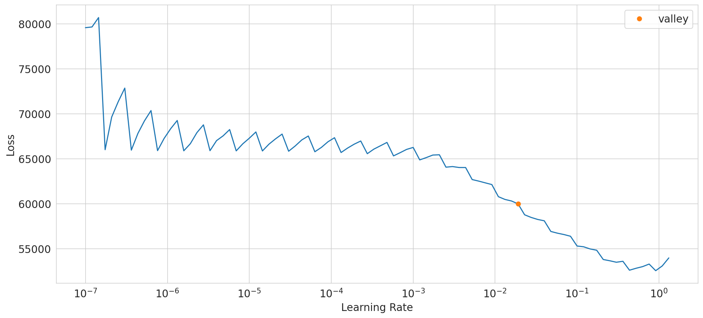
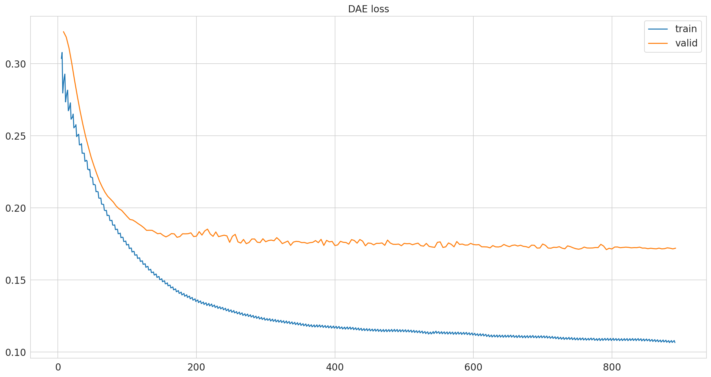

Denoising Autoencoder#
pimmslearn - INFO Experiment 03 - Analysis of latent spaces and performance comparisions
Papermill script parameters:
# files and folders
# Datasplit folder with data for experiment
folder_experiment: str = 'runs/example'
folder_data: str = '' # specify data directory if needed
file_format: str = 'csv' # file format of create splits, default pickle (pkl)
# Machine parsed metadata from rawfile workflow
fn_rawfile_metadata: str = 'data/dev_datasets/HeLa_6070/files_selected_metadata_N50.csv'
# training
epochs_max: int = 50 # Maximum number of epochs
# early_stopping:bool = True # Wheather to use early stopping or not
patience: int = 25 # Patience for early stopping
batch_size: int = 64 # Batch size for training (and evaluation)
cuda: bool = True # Whether to use a GPU for training
# model
# Dimensionality of encoding dimension (latent space of model)
latent_dim: int = 25
# A underscore separated string of layers, '128_64' for the encoder, reverse will be use for decoder
hidden_layers: str = '512'
sample_idx_position: int = 0 # position of index which is sample ID
model: str = 'DAE' # model name
model_key: str = 'DAE' # potentially alternative key for model (grid search)
save_pred_real_na: bool = True # Save all predictions for missing values
# metadata -> defaults for metadata extracted from machine data
meta_date_col: str = None # date column in meta data
meta_cat_col: str = None # category column in meta data
# Parameters
model = "DAE"
latent_dim = 10
batch_size = 64
epochs_max = 300
hidden_layers = "64"
sample_idx_position = 0
cuda = False
save_pred_real_na = True
fn_rawfile_metadata = "https://raw.githubusercontent.com/RasmussenLab/njab/HEAD/docs/tutorial/data/alzheimer/meta.csv"
folder_experiment = "runs/alzheimer_study"
model_key = "DAE"
Some argument transformations
{'folder_experiment': 'runs/alzheimer_study',
'folder_data': '',
'file_format': 'csv',
'fn_rawfile_metadata': 'https://raw.githubusercontent.com/RasmussenLab/njab/HEAD/docs/tutorial/data/alzheimer/meta.csv',
'epochs_max': 300,
'patience': 25,
'batch_size': 64,
'cuda': False,
'latent_dim': 10,
'hidden_layers': '64',
'sample_idx_position': 0,
'model': 'DAE',
'model_key': 'DAE',
'save_pred_real_na': True,
'meta_date_col': None,
'meta_cat_col': None}
{'batch_size': 64,
'cuda': False,
'data': Path('runs/alzheimer_study/data'),
'epochs_max': 300,
'file_format': 'csv',
'fn_rawfile_metadata': 'https://raw.githubusercontent.com/RasmussenLab/njab/HEAD/docs/tutorial/data/alzheimer/meta.csv',
'folder_data': '',
'folder_experiment': Path('runs/alzheimer_study'),
'hidden_layers': [64],
'latent_dim': 10,
'meta_cat_col': None,
'meta_date_col': None,
'model': 'DAE',
'model_key': 'DAE',
'out_figures': Path('runs/alzheimer_study/figures'),
'out_folder': Path('runs/alzheimer_study'),
'out_metrics': Path('runs/alzheimer_study'),
'out_models': Path('runs/alzheimer_study'),
'out_preds': Path('runs/alzheimer_study/preds'),
'patience': 25,
'sample_idx_position': 0,
'save_pred_real_na': True}
Some naming conventions
Load data in long format#
pimmslearn.io.datasplits - INFO Loaded 'train_X' from file: runs/alzheimer_study/data/train_X.csv
pimmslearn.io.datasplits - INFO Loaded 'val_y' from file: runs/alzheimer_study/data/val_y.csv
pimmslearn.io.datasplits - INFO Loaded 'test_y' from file: runs/alzheimer_study/data/test_y.csv
data is loaded in long format
Sample ID protein groups
Sample_084 Q6ZMI3 16.660
Sample_151 Q14165 16.263
Sample_109 P05543 19.873
Sample_006 A6NG10;K7EIJ0;K7EIN1;K7EMC9;K7ENL2;K7ESN4;Q969T9 16.654
Sample_063 Q6UXB8 16.817
Name: intensity, dtype: float64
Infer index names from long format
pimmslearn - INFO sample_id = 'Sample ID', single feature: index_column = 'protein groups'
load meta data for splits
| _collection site | _age at CSF collection | _gender | _t-tau [ng/L] | _p-tau [ng/L] | _Abeta-42 [ng/L] | _Abeta-40 [ng/L] | _Abeta-42/Abeta-40 ratio | _primary biochemical AD classification | _clinical AD diagnosis | _MMSE score | |
|---|---|---|---|---|---|---|---|---|---|---|---|
| Sample ID | |||||||||||
| Sample_000 | Sweden | 71.000 | f | 703.000 | 85.000 | 562.000 | NaN | NaN | biochemical control | NaN | NaN |
| Sample_001 | Sweden | 77.000 | m | 518.000 | 91.000 | 334.000 | NaN | NaN | biochemical AD | NaN | NaN |
| Sample_002 | Sweden | 75.000 | m | 974.000 | 87.000 | 515.000 | NaN | NaN | biochemical AD | NaN | NaN |
| Sample_003 | Sweden | 72.000 | f | 950.000 | 109.000 | 394.000 | NaN | NaN | biochemical AD | NaN | NaN |
| Sample_004 | Sweden | 63.000 | f | 873.000 | 88.000 | 234.000 | NaN | NaN | biochemical AD | NaN | NaN |
| ... | ... | ... | ... | ... | ... | ... | ... | ... | ... | ... | ... |
| Sample_205 | Berlin | 69.000 | f | 1,945.000 | NaN | 699.000 | 12,140.000 | 0.058 | biochemical AD | AD | 17.000 |
| Sample_206 | Berlin | 73.000 | m | 299.000 | NaN | 1,420.000 | 16,571.000 | 0.086 | biochemical control | non-AD | 28.000 |
| Sample_207 | Berlin | 71.000 | f | 262.000 | NaN | 639.000 | 9,663.000 | 0.066 | biochemical control | non-AD | 28.000 |
| Sample_208 | Berlin | 83.000 | m | 289.000 | NaN | 1,436.000 | 11,285.000 | 0.127 | biochemical control | non-AD | 24.000 |
| Sample_209 | Berlin | 63.000 | f | 591.000 | NaN | 1,299.000 | 11,232.000 | 0.116 | biochemical control | non-AD | 29.000 |
210 rows × 11 columns
Produce some addional simulated samples#
The validation simulated NA is used to by all models to evaluate training performance.
| observed | ||
|---|---|---|
| Sample ID | protein groups | |
| Sample_158 | Q9UN70;Q9UN70-2 | 14.630 |
| Sample_050 | Q9Y287 | 15.755 |
| Sample_107 | Q8N475;Q8N475-2 | 15.029 |
| Sample_199 | P06307 | 19.376 |
| Sample_067 | Q5VUB5 | 15.309 |
| ... | ... | ... |
| Sample_111 | F6SYF8;Q9UBP4 | 22.822 |
| Sample_002 | A0A0A0MT36 | 18.165 |
| Sample_049 | Q8WY21;Q8WY21-2;Q8WY21-3;Q8WY21-4 | 15.525 |
| Sample_182 | Q8NFT8 | 14.379 |
| Sample_123 | Q16853;Q16853-2 | 14.504 |
12600 rows × 1 columns
| observed | |
|---|---|
| count | 12,600.000 |
| mean | 16.339 |
| std | 2.741 |
| min | 7.209 |
| 25% | 14.412 |
| 50% | 15.935 |
| 75% | 17.910 |
| max | 30.140 |
Data in wide format#
Autoencoder need data in wide format
| protein groups | A0A024QZX5;A0A087X1N8;P35237 | A0A024R0T9;K7ER74;P02655 | A0A024R3W6;A0A024R412;O60462;O60462-2;O60462-3;O60462-4;O60462-5;Q7LBX6;X5D2Q8 | A0A024R644;A0A0A0MRU5;A0A1B0GWI2;O75503 | A0A075B6H7 | A0A075B6H9 | A0A075B6I0 | A0A075B6I1 | A0A075B6I6 | A0A075B6I9 | ... | Q9Y653;Q9Y653-2;Q9Y653-3 | Q9Y696 | Q9Y6C2 | Q9Y6N6 | Q9Y6N7;Q9Y6N7-2;Q9Y6N7-4 | Q9Y6R7 | Q9Y6X5 | Q9Y6Y8;Q9Y6Y8-2 | Q9Y6Y9 | S4R3U6 |
|---|---|---|---|---|---|---|---|---|---|---|---|---|---|---|---|---|---|---|---|---|---|
| Sample ID | |||||||||||||||||||||
| Sample_000 | 15.912 | 16.852 | 15.570 | 16.481 | 17.301 | 20.246 | 16.764 | 17.584 | 16.988 | 20.054 | ... | 16.012 | 15.178 | NaN | 15.050 | 16.842 | NaN | NaN | 19.563 | NaN | 12.805 |
| Sample_001 | NaN | 16.874 | 15.519 | 16.387 | NaN | 19.941 | 18.786 | 17.144 | NaN | 19.067 | ... | 15.528 | 15.576 | NaN | 14.833 | 16.597 | 20.299 | 15.556 | 19.386 | 13.970 | 12.442 |
| Sample_002 | 16.111 | NaN | 15.935 | 16.416 | 18.175 | 19.251 | 16.832 | 15.671 | 17.012 | 18.569 | ... | 15.229 | 14.728 | 13.757 | 15.118 | 17.440 | 19.598 | 15.735 | 20.447 | 12.636 | 12.505 |
| Sample_003 | 16.107 | 17.032 | 15.802 | 16.979 | 15.963 | 19.628 | 17.852 | 18.877 | 14.182 | 18.985 | ... | 15.495 | 14.590 | 14.682 | 15.140 | 17.356 | 19.429 | NaN | 20.216 | NaN | 12.445 |
| Sample_004 | 15.603 | 15.331 | 15.375 | 16.679 | NaN | 20.450 | 18.682 | 17.081 | 14.140 | 19.686 | ... | 14.757 | NaN | NaN | 15.256 | 17.075 | 19.582 | 15.328 | NaN | 13.145 | NaN |
5 rows × 1421 columns
Fill Validation data with potentially missing features#
| protein groups | A0A024QZX5;A0A087X1N8;P35237 | A0A024R0T9;K7ER74;P02655 | A0A024R3W6;A0A024R412;O60462;O60462-2;O60462-3;O60462-4;O60462-5;Q7LBX6;X5D2Q8 | A0A024R644;A0A0A0MRU5;A0A1B0GWI2;O75503 | A0A075B6H7 | A0A075B6H9 | A0A075B6I0 | A0A075B6I1 | A0A075B6I6 | A0A075B6I9 | ... | Q9Y653;Q9Y653-2;Q9Y653-3 | Q9Y696 | Q9Y6C2 | Q9Y6N6 | Q9Y6N7;Q9Y6N7-2;Q9Y6N7-4 | Q9Y6R7 | Q9Y6X5 | Q9Y6Y8;Q9Y6Y8-2 | Q9Y6Y9 | S4R3U6 |
|---|---|---|---|---|---|---|---|---|---|---|---|---|---|---|---|---|---|---|---|---|---|
| Sample ID | |||||||||||||||||||||
| Sample_000 | 15.912 | 16.852 | 15.570 | 16.481 | 17.301 | 20.246 | 16.764 | 17.584 | 16.988 | 20.054 | ... | 16.012 | 15.178 | NaN | 15.050 | 16.842 | NaN | NaN | 19.563 | NaN | 12.805 |
| Sample_001 | NaN | 16.874 | 15.519 | 16.387 | NaN | 19.941 | 18.786 | 17.144 | NaN | 19.067 | ... | 15.528 | 15.576 | NaN | 14.833 | 16.597 | 20.299 | 15.556 | 19.386 | 13.970 | 12.442 |
| Sample_002 | 16.111 | NaN | 15.935 | 16.416 | 18.175 | 19.251 | 16.832 | 15.671 | 17.012 | 18.569 | ... | 15.229 | 14.728 | 13.757 | 15.118 | 17.440 | 19.598 | 15.735 | 20.447 | 12.636 | 12.505 |
| Sample_003 | 16.107 | 17.032 | 15.802 | 16.979 | 15.963 | 19.628 | 17.852 | 18.877 | 14.182 | 18.985 | ... | 15.495 | 14.590 | 14.682 | 15.140 | 17.356 | 19.429 | NaN | 20.216 | NaN | 12.445 |
| Sample_004 | 15.603 | 15.331 | 15.375 | 16.679 | NaN | 20.450 | 18.682 | 17.081 | 14.140 | 19.686 | ... | 14.757 | NaN | NaN | 15.256 | 17.075 | 19.582 | 15.328 | NaN | 13.145 | NaN |
| ... | ... | ... | ... | ... | ... | ... | ... | ... | ... | ... | ... | ... | ... | ... | ... | ... | ... | ... | ... | ... | ... |
| Sample_205 | 15.682 | 16.886 | 14.910 | 16.482 | NaN | 17.705 | 17.039 | NaN | 16.413 | 19.102 | ... | NaN | 15.684 | 14.236 | 15.415 | 17.551 | 17.922 | 16.340 | 19.928 | 12.929 | NaN |
| Sample_206 | 15.798 | 17.554 | 15.600 | 15.938 | NaN | 18.154 | 18.152 | 16.503 | 16.860 | 18.538 | ... | 15.422 | 16.106 | NaN | 15.345 | 17.084 | 18.708 | NaN | 19.433 | NaN | NaN |
| Sample_207 | 15.739 | NaN | 15.469 | 16.898 | NaN | 18.636 | 17.950 | 16.321 | 16.401 | 18.849 | ... | 15.808 | 16.098 | 14.403 | 15.715 | NaN | 18.725 | 16.138 | 19.599 | 13.637 | 11.174 |
| Sample_208 | 15.477 | 16.779 | 14.995 | 16.132 | NaN | 14.908 | NaN | NaN | 16.119 | 18.368 | ... | 15.157 | 16.712 | NaN | 14.640 | 16.533 | 19.411 | 15.807 | 19.545 | NaN | NaN |
| Sample_209 | NaN | 17.261 | 15.175 | 16.235 | NaN | 17.893 | 17.744 | 16.371 | 15.780 | 18.806 | ... | 15.237 | 15.652 | 15.211 | 14.205 | 16.749 | 19.275 | 15.732 | 19.577 | 11.042 | 11.791 |
210 rows × 1421 columns
| protein groups | A0A024QZX5;A0A087X1N8;P35237 | A0A024R0T9;K7ER74;P02655 | A0A024R3W6;A0A024R412;O60462;O60462-2;O60462-3;O60462-4;O60462-5;Q7LBX6;X5D2Q8 | A0A024R644;A0A0A0MRU5;A0A1B0GWI2;O75503 | A0A075B6H7 | A0A075B6H9 | A0A075B6I0 | A0A075B6I1 | A0A075B6I6 | A0A075B6I9 | ... | Q9Y653;Q9Y653-2;Q9Y653-3 | Q9Y696 | Q9Y6C2 | Q9Y6N6 | Q9Y6N7;Q9Y6N7-2;Q9Y6N7-4 | Q9Y6R7 | Q9Y6X5 | Q9Y6Y8;Q9Y6Y8-2 | Q9Y6Y9 | S4R3U6 |
|---|---|---|---|---|---|---|---|---|---|---|---|---|---|---|---|---|---|---|---|---|---|
| Sample ID | |||||||||||||||||||||
| Sample_000 | NaN | NaN | NaN | NaN | NaN | NaN | NaN | NaN | NaN | NaN | ... | NaN | NaN | NaN | NaN | NaN | 19.863 | NaN | NaN | NaN | NaN |
| Sample_001 | NaN | NaN | NaN | NaN | NaN | NaN | NaN | NaN | NaN | NaN | ... | NaN | NaN | NaN | NaN | NaN | NaN | NaN | NaN | NaN | NaN |
| Sample_002 | NaN | 14.523 | NaN | NaN | NaN | NaN | NaN | NaN | NaN | NaN | ... | NaN | NaN | NaN | NaN | NaN | NaN | NaN | NaN | NaN | NaN |
| Sample_003 | NaN | NaN | NaN | NaN | NaN | NaN | NaN | NaN | NaN | NaN | ... | NaN | NaN | NaN | NaN | NaN | NaN | NaN | NaN | NaN | NaN |
| Sample_004 | NaN | NaN | NaN | NaN | 15.473 | NaN | NaN | NaN | NaN | NaN | ... | NaN | NaN | 14.048 | NaN | NaN | NaN | NaN | 19.867 | NaN | 12.235 |
| ... | ... | ... | ... | ... | ... | ... | ... | ... | ... | ... | ... | ... | ... | ... | ... | ... | ... | ... | ... | ... | ... |
| Sample_205 | NaN | NaN | NaN | NaN | NaN | NaN | NaN | NaN | NaN | NaN | ... | NaN | NaN | NaN | NaN | NaN | NaN | NaN | NaN | NaN | 11.802 |
| Sample_206 | NaN | NaN | NaN | NaN | NaN | NaN | NaN | NaN | NaN | NaN | ... | NaN | NaN | NaN | NaN | NaN | NaN | NaN | NaN | NaN | NaN |
| Sample_207 | NaN | NaN | NaN | NaN | NaN | NaN | NaN | NaN | NaN | NaN | ... | NaN | NaN | NaN | NaN | NaN | NaN | NaN | NaN | NaN | NaN |
| Sample_208 | NaN | NaN | NaN | NaN | NaN | NaN | 17.530 | NaN | NaN | NaN | ... | NaN | NaN | NaN | NaN | NaN | NaN | NaN | NaN | NaN | NaN |
| Sample_209 | 15.727 | NaN | NaN | NaN | NaN | NaN | NaN | NaN | NaN | NaN | ... | NaN | NaN | NaN | NaN | NaN | NaN | NaN | NaN | NaN | NaN |
210 rows × 1419 columns
| protein groups | A0A024QZX5;A0A087X1N8;P35237 | A0A024R0T9;K7ER74;P02655 | A0A024R3W6;A0A024R412;O60462;O60462-2;O60462-3;O60462-4;O60462-5;Q7LBX6;X5D2Q8 | A0A024R644;A0A0A0MRU5;A0A1B0GWI2;O75503 | A0A075B6H7 | A0A075B6H9 | A0A075B6I0 | A0A075B6I1 | A0A075B6I6 | A0A075B6I9 | ... | Q9Y653;Q9Y653-2;Q9Y653-3 | Q9Y696 | Q9Y6C2 | Q9Y6N6 | Q9Y6N7;Q9Y6N7-2;Q9Y6N7-4 | Q9Y6R7 | Q9Y6X5 | Q9Y6Y8;Q9Y6Y8-2 | Q9Y6Y9 | S4R3U6 |
|---|---|---|---|---|---|---|---|---|---|---|---|---|---|---|---|---|---|---|---|---|---|
| Sample ID | |||||||||||||||||||||
| Sample_000 | NaN | NaN | NaN | NaN | NaN | NaN | NaN | NaN | NaN | NaN | ... | NaN | NaN | NaN | NaN | NaN | 19.863 | NaN | NaN | NaN | NaN |
| Sample_001 | NaN | NaN | NaN | NaN | NaN | NaN | NaN | NaN | NaN | NaN | ... | NaN | NaN | NaN | NaN | NaN | NaN | NaN | NaN | NaN | NaN |
| Sample_002 | NaN | 14.523 | NaN | NaN | NaN | NaN | NaN | NaN | NaN | NaN | ... | NaN | NaN | NaN | NaN | NaN | NaN | NaN | NaN | NaN | NaN |
| Sample_003 | NaN | NaN | NaN | NaN | NaN | NaN | NaN | NaN | NaN | NaN | ... | NaN | NaN | NaN | NaN | NaN | NaN | NaN | NaN | NaN | NaN |
| Sample_004 | NaN | NaN | NaN | NaN | 15.473 | NaN | NaN | NaN | NaN | NaN | ... | NaN | NaN | 14.048 | NaN | NaN | NaN | NaN | 19.867 | NaN | 12.235 |
| ... | ... | ... | ... | ... | ... | ... | ... | ... | ... | ... | ... | ... | ... | ... | ... | ... | ... | ... | ... | ... | ... |
| Sample_205 | NaN | NaN | NaN | NaN | NaN | NaN | NaN | NaN | NaN | NaN | ... | NaN | NaN | NaN | NaN | NaN | NaN | NaN | NaN | NaN | 11.802 |
| Sample_206 | NaN | NaN | NaN | NaN | NaN | NaN | NaN | NaN | NaN | NaN | ... | NaN | NaN | NaN | NaN | NaN | NaN | NaN | NaN | NaN | NaN |
| Sample_207 | NaN | NaN | NaN | NaN | NaN | NaN | NaN | NaN | NaN | NaN | ... | NaN | NaN | NaN | NaN | NaN | NaN | NaN | NaN | NaN | NaN |
| Sample_208 | NaN | NaN | NaN | NaN | NaN | NaN | 17.530 | NaN | NaN | NaN | ... | NaN | NaN | NaN | NaN | NaN | NaN | NaN | NaN | NaN | NaN |
| Sample_209 | 15.727 | NaN | NaN | NaN | NaN | NaN | NaN | NaN | NaN | NaN | ... | NaN | NaN | NaN | NaN | NaN | NaN | NaN | NaN | NaN | NaN |
210 rows × 1421 columns
Denoising Autoencoder#
Analysis: DataLoaders, Model, transform#
Autoencoder(
(encoder): Sequential(
(0): Linear(in_features=1421, out_features=64, bias=True)
(1): Dropout(p=0.2, inplace=False)
(2): BatchNorm1d(64, eps=1e-05, momentum=0.1, affine=True, track_running_stats=True)
(3): LeakyReLU(negative_slope=0.1)
(4): Linear(in_features=64, out_features=10, bias=True)
)
(decoder): Sequential(
(0): Linear(in_features=10, out_features=64, bias=True)
(1): Dropout(p=0.2, inplace=False)
(2): BatchNorm1d(64, eps=1e-05, momentum=0.1, affine=True, track_running_stats=True)
(3): LeakyReLU(negative_slope=0.1)
(4): Linear(in_features=64, out_features=1421, bias=True)
)
)
Training#
Start Fit
- before_fit : [TrainEvalCallback, Recorder, ProgressCallback, EarlyStoppingCallback]
Start Epoch Loop
- before_epoch : [Recorder, ProgressCallback]
Start Train
- before_train : [TrainEvalCallback, Recorder, ProgressCallback]
Start Batch Loop
- before_batch : [ModelAdapter, CastToTensor]
- after_pred : [ModelAdapter]
- after_loss : [ModelAdapter]
- before_backward: []
- before_step : []
- after_step : []
- after_cancel_batch: []
- after_batch : [TrainEvalCallback, Recorder, ProgressCallback]
End Batch Loop
End Train
- after_cancel_train: [Recorder]
- after_train : [Recorder, ProgressCallback]
Start Valid
- before_validate: [TrainEvalCallback, Recorder, ProgressCallback]
Start Batch Loop
- **CBs same as train batch**: []
End Batch Loop
End Valid
- after_cancel_validate: [Recorder]
- after_validate : [Recorder, ProgressCallback]
End Epoch Loop
- after_cancel_epoch: []
- after_epoch : [Recorder, EarlyStoppingCallback]
End Fit
- after_cancel_fit: []
- after_fit : [ProgressCallback, EarlyStoppingCallback]
Adding a EarlyStoppingCallback results in an error. Potential fix in
PR3509 is not yet in
current version. Try again later
SuggestedLRs(valley=0.019054606556892395)

dump model config
| epoch | train_loss | valid_loss | time |
|---|---|---|---|
| 0 | 65049.707031 | 4067.652588 | 00:00 |
| 1 | 63447.675781 | 4060.361572 | 00:00 |
| 2 | 62044.597656 | 4012.928955 | 00:00 |
| 3 | 60649.421875 | 3917.091309 | 00:00 |
| 4 | 59318.492188 | 3784.158936 | 00:00 |
| 5 | 57958.304688 | 3635.944580 | 00:00 |
| 6 | 56581.683594 | 3497.084473 | 00:00 |
| 7 | 55279.222656 | 3366.763672 | 00:00 |
| 8 | 53961.445312 | 3250.015869 | 00:00 |
| 9 | 52695.921875 | 3143.930908 | 00:00 |
| 10 | 51437.890625 | 3051.581055 | 00:00 |
| 11 | 50225.292969 | 2962.163086 | 00:00 |
| 12 | 49029.699219 | 2888.282227 | 00:00 |
| 13 | 47916.902344 | 2819.135498 | 00:00 |
| 14 | 46921.949219 | 2754.108154 | 00:00 |
| 15 | 45967.640625 | 2702.324463 | 00:00 |
| 16 | 45026.050781 | 2656.913086 | 00:00 |
| 17 | 44158.500000 | 2621.040771 | 00:00 |
| 18 | 43387.199219 | 2596.819824 | 00:00 |
| 19 | 42675.722656 | 2571.363770 | 00:00 |
| 20 | 41958.500000 | 2537.814209 | 00:00 |
| 21 | 41302.003906 | 2513.972412 | 00:00 |
| 22 | 40683.789062 | 2499.074463 | 00:00 |
| 23 | 40078.953125 | 2471.915039 | 00:00 |
| 24 | 39546.250000 | 2444.649658 | 00:00 |
| 25 | 38971.578125 | 2419.539795 | 00:00 |
| 26 | 38430.816406 | 2414.577148 | 00:00 |
| 27 | 37935.671875 | 2399.781006 | 00:00 |
| 28 | 37426.863281 | 2382.285645 | 00:00 |
| 29 | 36956.500000 | 2366.549072 | 00:00 |
| 30 | 36492.207031 | 2347.741943 | 00:00 |
| 31 | 36021.144531 | 2324.252197 | 00:00 |
| 32 | 35602.242188 | 2325.062988 | 00:00 |
| 33 | 35192.703125 | 2324.357666 | 00:00 |
| 34 | 34812.511719 | 2310.231201 | 00:00 |
| 35 | 34438.363281 | 2294.962646 | 00:00 |
| 36 | 34088.195312 | 2298.457520 | 00:00 |
| 37 | 33762.082031 | 2280.011719 | 00:00 |
| 38 | 33432.847656 | 2267.246094 | 00:00 |
| 39 | 33116.289062 | 2279.235107 | 00:00 |
| 40 | 32782.925781 | 2296.084717 | 00:00 |
| 41 | 32477.851562 | 2293.453125 | 00:00 |
| 42 | 32184.601562 | 2263.613037 | 00:00 |
| 43 | 31925.781250 | 2269.687988 | 00:00 |
| 44 | 31680.468750 | 2294.267334 | 00:00 |
| 45 | 31473.093750 | 2293.772949 | 00:00 |
| 46 | 31284.484375 | 2295.091064 | 00:00 |
| 47 | 31070.019531 | 2302.571533 | 00:00 |
| 48 | 30855.160156 | 2270.083496 | 00:00 |
| 49 | 30656.525391 | 2273.379395 | 00:00 |
| 50 | 30478.599609 | 2313.031982 | 00:00 |
| 51 | 30324.162109 | 2282.950195 | 00:00 |
| 52 | 30177.609375 | 2319.197266 | 00:00 |
| 53 | 30024.197266 | 2335.191650 | 00:00 |
| 54 | 29948.796875 | 2292.335205 | 00:00 |
| 55 | 29839.880859 | 2272.150879 | 00:00 |
| 56 | 29711.568359 | 2310.546875 | 00:00 |
| 57 | 29562.769531 | 2269.158447 | 00:00 |
| 58 | 29486.871094 | 2275.829102 | 00:00 |
| 59 | 29342.435547 | 2282.022949 | 00:00 |
| 60 | 29201.582031 | 2276.013916 | 00:00 |
| 61 | 29059.619141 | 2219.625977 | 00:00 |
| 62 | 28958.988281 | 2272.250977 | 00:00 |
| 63 | 28857.224609 | 2289.276123 | 00:00 |
| 64 | 28708.970703 | 2223.784180 | 00:00 |
| 65 | 28604.498047 | 2213.344727 | 00:00 |
| 66 | 28467.625000 | 2245.025879 | 00:00 |
| 67 | 28384.455078 | 2207.736816 | 00:00 |
| 68 | 28299.761719 | 2218.709473 | 00:00 |
| 69 | 28207.568359 | 2248.550049 | 00:00 |
| 70 | 28078.533203 | 2248.954346 | 00:00 |
| 71 | 27992.195312 | 2220.181641 | 00:00 |
| 72 | 27899.740234 | 2217.922363 | 00:00 |
| 73 | 27817.949219 | 2251.101318 | 00:00 |
| 74 | 27718.691406 | 2224.742676 | 00:00 |
| 75 | 27687.804688 | 2235.085449 | 00:00 |
| 76 | 27576.265625 | 2239.326660 | 00:00 |
| 77 | 27521.564453 | 2233.293701 | 00:00 |
| 78 | 27447.583984 | 2260.521484 | 00:00 |
| 79 | 27397.458984 | 2238.308105 | 00:00 |
| 80 | 27348.017578 | 2208.330322 | 00:00 |
| 81 | 27262.777344 | 2219.558350 | 00:00 |
| 82 | 27224.820312 | 2230.781494 | 00:00 |
| 83 | 27141.568359 | 2192.964600 | 00:00 |
| 84 | 27099.660156 | 2221.928955 | 00:00 |
| 85 | 27019.281250 | 2228.034424 | 00:00 |
| 86 | 26961.886719 | 2226.261963 | 00:00 |
| 87 | 26888.568359 | 2217.318359 | 00:00 |
| 88 | 26824.177734 | 2218.288574 | 00:00 |
| 89 | 26759.675781 | 2210.426758 | 00:00 |
| 90 | 26716.324219 | 2216.953613 | 00:00 |
| 91 | 26661.794922 | 2219.769287 | 00:00 |
| 92 | 26634.437500 | 2234.874268 | 00:00 |
| 93 | 26639.888672 | 2216.753174 | 00:00 |
| 94 | 26621.845703 | 2245.936523 | 00:00 |
| 95 | 26570.894531 | 2192.634033 | 00:00 |
| 96 | 26546.628906 | 2236.903809 | 00:00 |
| 97 | 26499.138672 | 2223.442383 | 00:00 |
| 98 | 26463.800781 | 2227.825928 | 00:00 |
| 99 | 26453.333984 | 2191.304932 | 00:00 |
| 100 | 26399.203125 | 2197.111572 | 00:00 |
| 101 | 26386.894531 | 2228.466309 | 00:00 |
| 102 | 26321.974609 | 2219.903320 | 00:00 |
| 103 | 26298.019531 | 2218.212158 | 00:00 |
| 104 | 26310.960938 | 2203.836426 | 00:00 |
| 105 | 26285.367188 | 2243.272949 | 00:00 |
| 106 | 26225.855469 | 2235.610596 | 00:00 |
| 107 | 26202.099609 | 2212.476562 | 00:00 |
| 108 | 26148.390625 | 2244.354248 | 00:00 |
| 109 | 26087.544922 | 2230.153320 | 00:00 |
| 110 | 26069.531250 | 2189.508057 | 00:00 |
| 111 | 26051.263672 | 2213.914062 | 00:00 |
| 112 | 26028.703125 | 2210.871582 | 00:00 |
| 113 | 25996.175781 | 2197.630615 | 00:00 |
| 114 | 25979.443359 | 2210.715576 | 00:00 |
| 115 | 25946.523438 | 2210.595459 | 00:00 |
| 116 | 25915.912109 | 2214.256592 | 00:00 |
| 117 | 25903.320312 | 2193.340332 | 00:00 |
| 118 | 25903.291016 | 2239.260742 | 00:00 |
| 119 | 25921.492188 | 2213.336426 | 00:00 |
| 120 | 25909.794922 | 2202.429199 | 00:00 |
| 121 | 25931.623047 | 2201.938477 | 00:00 |
| 122 | 25892.681641 | 2204.202881 | 00:00 |
| 123 | 25888.156250 | 2190.083496 | 00:00 |
| 124 | 25893.107422 | 2210.473877 | 00:00 |
| 125 | 25865.419922 | 2207.283691 | 00:00 |
| 126 | 25865.349609 | 2208.908936 | 00:00 |
| 127 | 25809.166016 | 2198.772217 | 00:00 |
| 128 | 25780.582031 | 2206.373291 | 00:00 |
| 129 | 25748.478516 | 2212.392578 | 00:00 |
| 130 | 25721.503906 | 2190.715576 | 00:00 |
| 131 | 25653.927734 | 2186.232422 | 00:00 |
| 132 | 25603.003906 | 2210.052979 | 00:00 |
| 133 | 25535.265625 | 2183.958984 | 00:00 |
| 134 | 25546.300781 | 2179.187500 | 00:00 |
| 135 | 25603.308594 | 2175.737305 | 00:00 |
| 136 | 25649.937500 | 2219.401367 | 00:00 |
| 137 | 25591.792969 | 2223.748291 | 00:00 |
| 138 | 25570.865234 | 2174.818604 | 00:00 |
| 139 | 25551.917969 | 2180.262207 | 00:00 |
| 140 | 25530.482422 | 2214.250000 | 00:00 |
| 141 | 25548.210938 | 2202.250488 | 00:00 |
| 142 | 25483.474609 | 2180.456543 | 00:00 |
| 143 | 25488.279297 | 2226.626709 | 00:00 |
| 144 | 25519.646484 | 2201.475586 | 00:00 |
| 145 | 25470.070312 | 2204.536865 | 00:00 |
| 146 | 25485.781250 | 2195.594971 | 00:00 |
| 147 | 25445.341797 | 2196.171631 | 00:00 |
| 148 | 25397.167969 | 2210.614502 | 00:00 |
| 149 | 25374.566406 | 2200.481201 | 00:00 |
| 150 | 25329.740234 | 2197.820801 | 00:00 |
| 151 | 25258.978516 | 2199.420166 | 00:00 |
| 152 | 25249.164062 | 2180.598633 | 00:00 |
| 153 | 25226.289062 | 2180.247559 | 00:00 |
| 154 | 25157.175781 | 2178.881348 | 00:00 |
| 155 | 25103.914062 | 2171.277344 | 00:00 |
| 156 | 25059.507812 | 2191.263916 | 00:00 |
| 157 | 25080.230469 | 2180.103516 | 00:00 |
| 158 | 25043.099609 | 2179.012451 | 00:00 |
| 159 | 25045.697266 | 2183.755859 | 00:00 |
| 160 | 25020.955078 | 2201.045898 | 00:00 |
| 161 | 25036.265625 | 2189.815430 | 00:00 |
| 162 | 25038.224609 | 2181.722168 | 00:00 |
| 163 | 25041.292969 | 2192.907227 | 00:00 |
| 164 | 25007.753906 | 2196.331055 | 00:00 |
| 165 | 24970.525391 | 2187.368408 | 00:00 |
| 166 | 25004.232422 | 2194.340820 | 00:00 |
| 167 | 24948.863281 | 2184.809814 | 00:00 |
| 168 | 24938.375000 | 2181.673340 | 00:00 |
| 169 | 24946.431641 | 2173.847900 | 00:00 |
| 170 | 24960.757812 | 2194.848877 | 00:00 |
| 171 | 24963.316406 | 2193.927734 | 00:00 |
| 172 | 24922.515625 | 2169.302002 | 00:00 |
| 173 | 24934.964844 | 2170.316406 | 00:00 |
| 174 | 24942.349609 | 2204.942627 | 00:00 |
| 175 | 24933.431641 | 2193.672852 | 00:00 |
| 176 | 24894.761719 | 2169.378418 | 00:00 |
| 177 | 24859.005859 | 2168.342529 | 00:00 |
| 178 | 24850.820312 | 2176.479492 | 00:00 |
| 179 | 24793.089844 | 2175.188721 | 00:00 |
| 180 | 24749.845703 | 2181.515137 | 00:00 |
| 181 | 24716.025391 | 2169.042236 | 00:00 |
| 182 | 24680.792969 | 2163.209961 | 00:00 |
| 183 | 24694.449219 | 2188.644287 | 00:00 |
| 184 | 24688.128906 | 2181.899414 | 00:00 |
| 185 | 24645.349609 | 2171.711670 | 00:00 |
| 186 | 24616.687500 | 2163.720947 | 00:00 |
| 187 | 24598.630859 | 2159.502441 | 00:00 |
| 188 | 24601.119141 | 2164.946533 | 00:00 |
| 189 | 24589.062500 | 2178.252197 | 00:00 |
| 190 | 24566.927734 | 2170.276611 | 00:00 |
| 191 | 24576.546875 | 2169.770508 | 00:00 |
| 192 | 24599.978516 | 2170.309814 | 00:00 |
| 193 | 24553.906250 | 2174.149658 | 00:00 |
| 194 | 24514.173828 | 2173.664307 | 00:00 |
| 195 | 24502.251953 | 2202.172363 | 00:00 |
| 196 | 24525.009766 | 2186.997559 | 00:00 |
| 197 | 24557.515625 | 2155.752686 | 00:00 |
| 198 | 24537.005859 | 2167.704346 | 00:00 |
| 199 | 24516.824219 | 2161.423096 | 00:00 |
| 200 | 24534.527344 | 2178.525391 | 00:00 |
| 201 | 24517.027344 | 2178.985840 | 00:00 |
| 202 | 24493.966797 | 2172.660645 | 00:00 |
| 203 | 24505.083984 | 2175.140625 | 00:00 |
| 204 | 24515.777344 | 2177.343262 | 00:00 |
| 205 | 24496.433594 | 2175.617432 | 00:00 |
| 206 | 24521.503906 | 2171.510498 | 00:00 |
| 207 | 24512.277344 | 2173.552734 | 00:00 |
| 208 | 24486.843750 | 2173.186035 | 00:00 |
| 209 | 24515.800781 | 2177.509766 | 00:00 |
| 210 | 24452.605469 | 2169.078369 | 00:00 |
| 211 | 24442.089844 | 2169.507080 | 00:00 |
| 212 | 24463.960938 | 2164.059326 | 00:00 |
| 213 | 24396.619141 | 2167.962891 | 00:00 |
| 214 | 24368.900391 | 2164.744873 | 00:00 |
| 215 | 24335.964844 | 2162.852295 | 00:00 |
| 216 | 24310.792969 | 2169.034424 | 00:00 |
| 217 | 24272.175781 | 2162.532471 | 00:00 |
| 218 | 24284.994141 | 2164.324951 | 00:00 |
| 219 | 24243.076172 | 2171.497803 | 00:00 |
| 220 | 24180.417969 | 2168.254883 | 00:00 |
| 221 | 24211.458984 | 2162.299805 | 00:00 |
| 222 | 24192.478516 | 2168.644043 | 00:00 |
No improvement since epoch 197: early stopping
Save number of actually trained epochs
223
Loss normalized by total number of measurements#
pimmslearn.plotting - INFO Saved Figures to runs/alzheimer_study/figures/dae_training

Why is the validation loss better then the training loss?
during training input data is masked and needs to be reconstructed
when evaluating the model, all input data is provided and only the artifically masked data is used for evaluation.
Predictions#
data of training data set and validation dataset to create predictions is the same as training data.
predictions include missing values (which are not further compared)
[ ] double check ModelAdapter
create predictiona and select for validation data
Sample ID protein groups
Sample_000 A0A024QZX5;A0A087X1N8;P35237 15.986
A0A024R0T9;K7ER74;P02655 16.480
A0A024R3W6;A0A024R412;O60462;O60462-2;O60462-3;O60462-4;O60462-5;Q7LBX6;X5D2Q8 15.760
A0A024R644;A0A0A0MRU5;A0A1B0GWI2;O75503 16.775
A0A075B6H7 16.383
...
Sample_209 Q9Y6R7 19.324
Q9Y6X5 15.542
Q9Y6Y8;Q9Y6Y8-2 19.429
Q9Y6Y9 11.183
S4R3U6 11.526
Length: 298410, dtype: float32
| observed | DAE | ||
|---|---|---|---|
| Sample ID | protein groups | ||
| Sample_158 | Q9UN70;Q9UN70-2 | 14.630 | 15.358 |
| Sample_050 | Q9Y287 | 15.755 | 16.682 |
| Sample_107 | Q8N475;Q8N475-2 | 15.029 | 14.080 |
| Sample_199 | P06307 | 19.376 | 18.723 |
| Sample_067 | Q5VUB5 | 15.309 | 15.096 |
| ... | ... | ... | ... |
| Sample_111 | F6SYF8;Q9UBP4 | 22.822 | 22.909 |
| Sample_002 | A0A0A0MT36 | 18.165 | 15.558 |
| Sample_049 | Q8WY21;Q8WY21-2;Q8WY21-3;Q8WY21-4 | 15.525 | 15.761 |
| Sample_182 | Q8NFT8 | 14.379 | 13.758 |
| Sample_123 | Q16853;Q16853-2 | 14.504 | 14.533 |
12600 rows × 2 columns
| observed | DAE | ||
|---|---|---|---|
| Sample ID | protein groups | ||
| Sample_000 | A0A075B6P5;P01615 | 17.016 | 17.143 |
| A0A087X089;Q16627;Q16627-2 | 18.280 | 18.050 | |
| A0A0B4J2B5;S4R460 | 21.735 | 22.320 | |
| A0A140T971;O95865;Q5SRR8;Q5SSV3 | 14.603 | 15.365 | |
| A0A140TA33;A0A140TA41;A0A140TA52;P22105;P22105-3;P22105-4 | 16.143 | 16.667 | |
| ... | ... | ... | ... |
| Sample_209 | Q96ID5 | 16.074 | 15.777 |
| Q9H492;Q9H492-2 | 13.173 | 13.440 | |
| Q9HC57 | 14.207 | 13.764 | |
| Q9NPH3;Q9NPH3-2;Q9NPH3-5 | 14.962 | 15.257 | |
| Q9UGM5;Q9UGM5-2 | 16.871 | 16.537 |
12600 rows × 2 columns
save missing values predictions
Sample ID protein groups
Sample_000 A0A075B6J9 15.447
A0A075B6Q5 16.479
A0A075B6R2 16.648
A0A075B6S5 16.160
A0A087WSY4 16.338
...
Sample_209 Q9P1W8;Q9P1W8-2;Q9P1W8-4 15.962
Q9UI40;Q9UI40-2 15.724
Q9UIW2 17.092
Q9UMX0;Q9UMX0-2;Q9UMX0-4 13.584
Q9UP79 15.852
Name: intensity, Length: 46401, dtype: float32
Plots#
validation data
| latent dimension 1 | latent dimension 2 | latent dimension 3 | latent dimension 4 | latent dimension 5 | latent dimension 6 | latent dimension 7 | latent dimension 8 | latent dimension 9 | latent dimension 10 | |
|---|---|---|---|---|---|---|---|---|---|---|
| Sample ID | ||||||||||
| Sample_000 | -3.691 | -0.173 | 3.079 | -0.843 | -5.671 | -6.777 | -0.732 | 2.119 | 1.860 | -3.675 |
| Sample_001 | -3.936 | -4.362 | 3.149 | 2.244 | -2.589 | -3.733 | -2.818 | 3.815 | 0.810 | -3.741 |
| Sample_002 | -5.303 | -0.352 | 0.267 | 1.620 | -9.058 | 0.360 | -4.551 | 4.327 | 5.011 | 1.569 |
| Sample_003 | -3.680 | 1.885 | 3.529 | 0.533 | -5.904 | -6.044 | -4.070 | 3.748 | 0.090 | -1.577 |
| Sample_004 | -1.615 | -0.386 | 3.534 | 1.530 | -6.918 | -4.638 | -2.559 | 1.351 | 0.164 | -4.204 |
| ... | ... | ... | ... | ... | ... | ... | ... | ... | ... | ... |
| Sample_205 | -0.093 | 1.489 | -2.084 | 4.850 | -4.948 | -3.620 | -1.684 | -0.263 | 5.265 | 4.696 |
| Sample_206 | -6.352 | -3.080 | -0.347 | 7.127 | 0.280 | 0.224 | 0.356 | -3.576 | 1.606 | -1.557 |
| Sample_207 | 1.438 | -1.966 | -2.909 | 5.711 | -3.849 | -9.491 | 3.666 | -2.396 | 3.473 | -3.057 |
| Sample_208 | 2.090 | -6.689 | -1.915 | 7.048 | -1.701 | -5.607 | -3.569 | -2.223 | 2.381 | 1.675 |
| Sample_209 | 0.367 | -3.839 | -1.082 | 6.789 | -3.815 | 0.234 | -1.456 | 1.361 | -3.487 | 0.940 |
210 rows × 10 columns
Comparisons#
Simulated NAs : Artificially created NAs. Some data was sampled and set explicitly to misssing before it was fed to the model for reconstruction.
Validation data#
all measured (identified, observed) peptides in validation data
The simulated NA for the validation step are real test data (not used for training nor early stopping)
Selected as truth to compare to: observed
{'DAE': {'MSE': 0.46022680520950504,
'MAE': 0.4323505271384001,
'N': 12600,
'prop': 1.0}}
Test Datasplit#
Selected as truth to compare to: observed
{'DAE': {'MSE': 0.47220598073760783,
'MAE': 0.43495317972187797,
'N': 12600,
'prop': 1.0}}
Save all metrics as json
{ 'test_simulated_na': { 'DAE': { 'MAE': 0.43495317972187797,
'MSE': 0.47220598073760783,
'N': 12600,
'prop': 1.0}},
'valid_simulated_na': { 'DAE': { 'MAE': 0.4323505271384001,
'MSE': 0.46022680520950504,
'N': 12600,
'prop': 1.0}}}
| subset | valid_simulated_na | test_simulated_na | |
|---|---|---|---|
| model | metric_name | ||
| DAE | MSE | 0.460 | 0.472 |
| MAE | 0.432 | 0.435 | |
| N | 12,600.000 | 12,600.000 | |
| prop | 1.000 | 1.000 |
Save predictions#
Config#
{}
{'M': 1421,
'batch_size': 64,
'cuda': False,
'data': Path('runs/alzheimer_study/data'),
'epoch_trained': 223,
'epochs_max': 300,
'file_format': 'csv',
'fn_rawfile_metadata': 'https://raw.githubusercontent.com/RasmussenLab/njab/HEAD/docs/tutorial/data/alzheimer/meta.csv',
'folder_data': '',
'folder_experiment': Path('runs/alzheimer_study'),
'hidden_layers': [64],
'latent_dim': 10,
'meta_cat_col': None,
'meta_date_col': None,
'model': 'DAE',
'model_key': 'DAE',
'n_params': 184983,
'out_figures': Path('runs/alzheimer_study/figures'),
'out_folder': Path('runs/alzheimer_study'),
'out_metrics': Path('runs/alzheimer_study'),
'out_models': Path('runs/alzheimer_study'),
'out_preds': Path('runs/alzheimer_study/preds'),
'patience': 25,
'sample_idx_position': 0,
'save_pred_real_na': True}